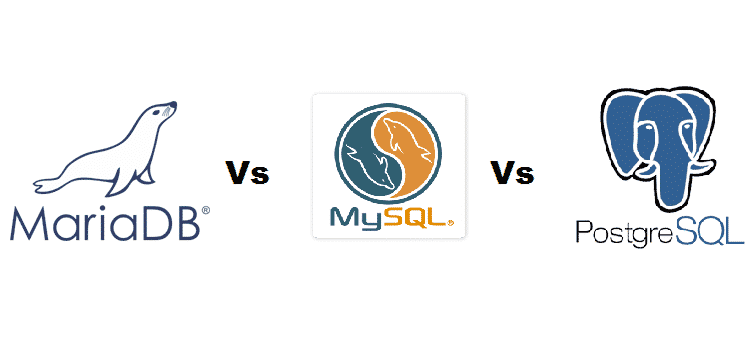

The Web
Categorie
Full Stack Development
Profiel Back End Web Developer Database
 Een Back End Web Developer Database richt zich op server side van website of App en betreft de data laag en daarbij behorende technische infrastructuur. Gelet op aard en karakter zijn er specifieke back end web development database tools beschikbaar.
Een Back End Web Developer Database richt zich op server side van website of App en betreft de data laag en daarbij behorende technische infrastructuur. Gelet op aard en karakter zijn er specifieke back end web development database tools beschikbaar.
→ zie: Wikipedia Front End Back End
Taken
Beheersing skill set en taken Back End Web Developer Software wordt verondersteld. Voor Back End Web Developer Database komt erbij volledige server side programmeren met inzet en gebruik van database. De Back End Web Developer Database beheerst minimaal één database omgeving om taken te kunnen verrichten.
Database keuze
Elke front end development software kan met elke back end database verbinden. Keuze welke database wordt gebruikt hangt af van het doel van gegevensopslag. Niettemin blijkt in de praktijk een populaire voorsortering omtrent welke software met welke database worden gebruikt:
- Talen Python en PHP met MySQL, MariaDB, PostgreSQL en MS SQL
- Framework Node.js met MongoDB en Couchbase voor document management
- Lichtgewicht App en weinig data met SQLite, NeDB en Redis
- Cloud computing met FireBase, AWS en Azure Document DB
- Open Source
-
Deze web development beginner guide richt zich op free open source tooling en dus ook wat betreft databases komen die aan bod en zijn onderstaand verder uitgewerkt. Er bestaan ook proprietry producten van Microsoft en IBM, doe zinvol zijn te bestuderen ingeval van grote hoeveelheden data of complexe functionaliteit.
Database MySQL is half-half dwz het is open source (prima!), echter alleen voor doelgroep "community" is gebruik free, en business wordt geacht licentie vergoeding aan Oracle te betalen. Ten tijde van aankoop door Oracle met dus zodoende het alleenrecht werd MySQL van ene op andere dag proprietry database, met tot gevolg de ontwikkeling van evenknie free open source MariaDB.
→ zie: Wikipedia Open Source
- Lamp Stack
-
LAMP is een acroniem voor een set van free open source tooling, die vaak samen gebruikt worden om dynamische websites te programmeren:
L = Linux, het besturingssysteem
A = Apache HTTP Server, de webserver (of anders prima is NginX)
M = MariaDB of MySQL of PostgreSQL (LAPP) of SQLite (LASP) voor database
P = PHP, Perl en/of Python programmeer talen
→ zie: Wikipedia LAMP Stack
Relationele Database
Een relationele database is een database die is opgebouwd volgens een relationeel model. De gegevens worden opgeslagen in tabellen waarin de rijen de soortgelijke groepen informatie, de records vormen, en de kolommen de informatie die voor elk record moet worden opgeslagen. Apps die veel gegevens moeten verwerken, gebruiken hier vaak een relationele database voor.
→ zie: Wikipedia Relational Database
- Kenmerken
-
Verschillende tabellen kunnen met elkaar worden verbonden door een kolom toe te voegen waarin een verwijzing naar een record in een andere tabel wordt opgenomen. Wanneer de gegevens in een relationele database goed gestructureerd zijn, wordt duplicatie van gegevens tot een minimum beperkt, en fouten in de gegevensverwerking voorkomen.
In een relationele database kan data worden opgeslagen, geraadpleegd en gewijzigd middels een relationeel database management systeem, RDBMS. Er zijn meerdere systemen verkrijgbaar. Vele daarvan kunnen in de gestandaardiseerde taal SQL worden geraadpleegd, verwerkt en bewerkt.
SQL
 Structured Query Language (SQL) is een ANSI/ISO standaardtaal voor een RDBMS die gebruikt kan worden voor taken zoals het bevragen en het aanpassen van gegevens in een relationele database. SQL kan met vrijwel alle moderne relationele databaseproducten worden gebruikt.
Structured Query Language (SQL) is een ANSI/ISO standaardtaal voor een RDBMS die gebruikt kan worden voor taken zoals het bevragen en het aanpassen van gegevens in een relationele database. SQL kan met vrijwel alle moderne relationele databaseproducten worden gebruikt.
→ zie: Wikipedia SQL
- Kenmerken
-
SQL maakt voor de communicatie met het DBMS gebruik van zogenaamde query's. Een query is een opdracht die naar het DBMS wordt verzonden. Het DBMS zal de opdracht interpreteren en uitvoeren en stuurt eventuele gegevens terug naar het opdrachtgevende programma. Bij data overdracht tussen front end en back end wordt meestal het JSON format gebruikt.
Database MySQL
 Het MySQL van Oracle bestaat onder meer uit een serverprogramma, doorgaans mysqld genoemd. Hierbij staat de d voor daemon, de Unix- of Linux term voor een proces dat op de computer draait zonder inmenging van de gebruiker.
Het MySQL van Oracle bestaat onder meer uit een serverprogramma, doorgaans mysqld genoemd. Hierbij staat de d voor daemon, de Unix- of Linux term voor een proces dat op de computer draait zonder inmenging van de gebruiker.
→ zie: Wikipedia MySQL
→ zie: Website Oracle download MySQL free community versie
MySQL uit een verzameling clientprogramma's, zoals mysql en mysqldump waarmee automatisch of interactief met de server gecommuniceerd kan worden. MySQL is een populair databasemanagementsysteem dat voor het gestructureerd opslaan van gegevens voor zeer veel toepassingen wordt gebruikt.
MySQL is only free for community dus proprietry, met dus licentie vergoeding betalen door business. Zie hierna en aanrader voor gebruik het wél free open source MariaDB.
→ zie: YouTube Videotorial SQL Workbench met database MySQL
- phpMyAdmin
-
 WebApp phpMyAdmin is qua functionaliteit te vergelijken met hiervoor beschreven MySQL Workbench, behalve dan dat een WebApp zoals phpMyAdmin niet behoeft te worden gedownload want deze App werkt via een browser.
WebApp phpMyAdmin is qua functionaliteit te vergelijken met hiervoor beschreven MySQL Workbench, behalve dan dat een WebApp zoals phpMyAdmin niet behoeft te worden gedownload want deze App werkt via een browser.
→ zie: Wikipedia phpMyAdmin
→ zie: Website phpMyAdmin get started
→ zie: Overzicht met vergelijk van database toolsMet phpMyAdmin kan MySQL databases via de browser beheerd en geraadpleegd kunnen worden. De WebApp kan onder andere databases aanmaken en verwijderen; tabellen aanmaken, verwijderen en veranderen; gegevensvelden aanmaken, verwijderen en aanpassen en SQL commando's aanmaken.
Database MariaDB
MariaDB is een evenknie (een fork) van MySQL met nagenoeg dezelfde functionaliteit als het voorbeeld MySQL. Behalve dan dan MariaDB free open source software is en MySQL niet free, maar wel open source. Vanwege de free of not free gaat met name voor organisaties of commerciele bedrijven de keuze vaak naar MariaDB.
→ zie: Wikipedia MariaDB
→ zie: Website MariaDB download & get started
Behoudens enkele details is werken met MariaDB gelijk aan werken met MySQL; of anders gezegd: commando's en tooling zijn onderling gelijk en uitwisselbaar. Met andere woorden: eenmaal leren werken met database MySQL en phpMyAdmin (zie boven) staat zo goed als gelijk aan kunnen werken met MariaDB.
Gelet op de functionele gelijkheid tussen MySQL en MariaDB zijn er dan ook weinig tutorials specifiek gericht op MariaDB. En eerstgenoemde was er eerder, dus was/is er ook geen incentive om speciaal een tutorial voor laatstgenoemde te maken. Niettemin, hieronder toch.
→ zie: YouTube Videotorial SQL Workbench met database MariaDB
Database PostgreSQL
 PostgreSQL is free open source RDMS en biedt een alternatief voor zowel zoals MariaDB en Firebird, als voor propriëtaire systemen zoals Oracle MySQL, Sybase, DB2 en Microsoft SQL Server. PostgreSQL wordt niet beheerd of gecontroleerd door één enkel bedrijf, maar steunt op een wereldwijde gemeenschap van ontwikkelaars en bedrijven.
PostgreSQL is free open source RDMS en biedt een alternatief voor zowel zoals MariaDB en Firebird, als voor propriëtaire systemen zoals Oracle MySQL, Sybase, DB2 en Microsoft SQL Server. PostgreSQL wordt niet beheerd of gecontroleerd door één enkel bedrijf, maar steunt op een wereldwijde gemeenschap van ontwikkelaars en bedrijven.
→ zie: Wikipedia PostgreSQL
→ zie: Website PostgreSQL download & get started
Postgis is een open source spatial database extensie voor PostgreSQL. Het voegt support toe voor geographische objecten waarmee locatie queries gedaan kunnen worden in SQL zoals distance, area, union, intersection. Het voegt ook speciale geometry data types en ruimtelijke indexen toe aan de database. De laatste release versie is beschikbaar als een optionele add-on in de PostgreSQL installatie packages.
- PgAdmin
-
Gelijk phpAdmin voor MySQL en MariaDB zijn er ook GUI webApps database management tools waarvan pgAdmin de meest gebruikte lijkt. De werking van PgAdmin is in grote lijnen gelijk aan andere genoemde.
→ zie: Website pgAdmin download & get startedNaast pgAdmin zijn er ook psql, phpPgAdmin, PostgreSQL Studio, TeamPostgreSQL, pgBadger, pgDevOps met elk weer hun bijzonderheden, en de moeite waarde van bestudering.
RDBMS - welke te gebruiken
 In dit artikel krijgt u informatie over wat MariaDB is, wat MySQL is en wat PostgreSQL is. Je vindt ook het verschil tussen hen.
Alle zijn open source database en vereist dezelfde tijd voor installatie, maar PostgreSQL kwam vooruit.
Zowel MySQL als MariaDB hebben uitstekend werk verricht om zichzelf te verbeteren om relevant te blijven, maar PostgreSQL is de beste en het is minder moeilijk dan tafelovererving, regelsystemen en database evenementen.
→ zie: Artikel MariaDB vs MySQL vs PostgreSQL
Database Not Only SQL - NoSQL
Een NoSQL database verwijst oorspronkelijk naar "niet SQL" of "niet relationele" database en biedt een mechanisme voor het opslaan en ophalen van gegevens die niet zijn zijn gemodelleerd via tabelrelaties zoals gebruikt in relationele databases. NoSQL databases worden steeds vaker gebruikt in big data en realtime webapplicaties.
→ zie: Wikipedia NoSQL
- Kenmerken
-
Kenmerken zijn eenvoud van ontwerp, eenvoudiger "horizontale" schaling naar clusters van machines, wat een probleem is voor relationele databases, fijnere controle over beschikbaarheid. De datastructuren die worden gebruikt door NoSQL databases, bijv. Sleutelwaarde, brede kolom, grafiek of document, verschillen van die standaard worden gebruikt in relationele databases, waardoor sommige bewerkingen sneller verlopen in NoSQL.
- Types van NoSQL databases
-
Navolgende NoSQL databases worden onderstaand verder uitgewerkt.
- Document database | MongoDB en CouchDB
- Column database | Apache Cassandra
- Key Value database | Redis en Memcache
- Graph database | Neo4jGebruik van een gegeven NoSQL database hangt af van het probleem dat moet worden opgelost. Soms worden de datastructuren die worden gebruikt door NoSQL databases ook gezien als "flexibeler" dan relationele database tabellen.
Database MongoDB
MongoDB is een (community free) open source document georiënteerde database. Er is geen schema, de documenten worden in de vorm van BSON, binair JSON, opgeslagen en de structuur van deze documenten is flexibel. De database kan gemakkelijk gedistribueerd worden, de data wordt dan over meerdere computers verspreid om gedistribueerde gegevensverwerking mogelijk te maken.
→ zie: Wikipedia MongoDB
→ zie: Website MongDB download & get started
MongoDB is geen relationeel databasemanagementsysteem, er is geen ondersteuning voor joins en voldoet ook niet aan de ACID regels want de ondersteuning voor transacties is beperkt. MongoDB wordt gerekend tot de zogenaamde NoSQL-databases. Er is speciale ondersteuning voor het opslaan van loginformatie (capped collections) en voor het opslaan van blobs.
MongoDB kan goed gebruikt worden voor het opslaan en analyseren van bezoekersaantallen en het klikgedrag op een druk bezochte website. Ook voor het cachen van gegevens voor sneller zoeken is MongoDB heel geschikt omdat deze datacache over meerdere computers kan worden verspreid.
Voor complexe data-analyse en aggregatie kunnen er MapReduce functies geschreven worden met behulp van JavaScript. De naam "MongoDB" is afgeleid van het Amerikaanse slangwoord "humongous" wat extreem groot betekent.
- Compass
-
Compass is gelijk phpAdmin voor MySQL en MariaDB een GUI webApp database management tool voor MongoDB.
→ zie: Website Compass download & get startedCompass ondersteunt in onderzoek van gegevens, voert adhoc query's in seconden uit, bewerkt gegevens met volledige CRUD functionaliteit, bekijkt en optimaliseert zoekopdracht prestaties.
Database Appache Cassandra
Apache Cassandra is een free open source, gedistribueerd, breed kolomarchief, NoSQL databasebeheersysteem dat is ontworpen om grote hoeveelheden gegevens te verwerken over veel servers en een hoge beschikbaarheid biedt zonder een enkel storingspunt.
→ zie: Wikipedia Apache Cassandra
→ zie: Website Apache Cassandra download & get started
Cassandra biedt robuuste ondersteuning voor clusters verspreid over meerdere datacenters, met asynchrone masterless replicatie die bewerkingen met lage latentie mogelijk maakt voor alle clients.
- CQL
-
Cassandra introduceerde de Cassandra Query Language (CQL). CQL is een eenvoudige interface voor toegang tot Cassandra, als alternatief voor de traditionele Structured Query Language (SQL). CQL voegt een abstractielaag toe die implementatiedetails van deze structuur verbergt en native syntaxis biedt voor collecties en andere veelgebruikte coderingen.
Database Redis
Redis is een free open source tool voor in het geheugen opgeslagen datastructuur, te gebruiken als database-, cache- en berichtenmakelaar. Redis wordt gebruikt voor sessie caching, volledige pagina cache, berichten wachtrij toepassingen, leaderboards etc. Redis bewaart meestal de hele dataset in het geheugen.
→ zie: Wikipedia Redis
→ zie: Website Redis download & get started
Redis ondersteunt datastructuren zoals strings, hashes, lijsten, sets, gesorteerde sets met bereikquery's, bitmaps, hyperloglogs, geospatiale indexen met radiusquery's en streams. Redis heeft ingebouwde replicatie, Lua-scripting, LRU-uitzetting, transacties en verschillende niveaus van persistentie op de schijf en biedt hoge beschikbaarheid via Redis Sentinel en automatische partitionering met Redis Cluster.
- Supported programmeer talen
-
Veel programmeertalen hebben Redis taalbindingen aan de clientzijde, waaronder: ActionScript, C, C ++, C#, Chicken, Clojure, Common Lisp, Crystal, D, Dart, Elixir, Erlang, Go, Haskell, Haxe, Io, Java, JavaScript (Node.js), Julia, Lua, Objective-C, OCaml, Perl, PHP, Pure Data, Python, R, Racket, Ruby, Rust, Scala, Smalltalk, Swift en Tcl. Er bestaan verschillende clientsoftwareprogramma's in deze talen.
→ zie: Website Redis Supported Clients→ zie: YouTube Videotorial Redis